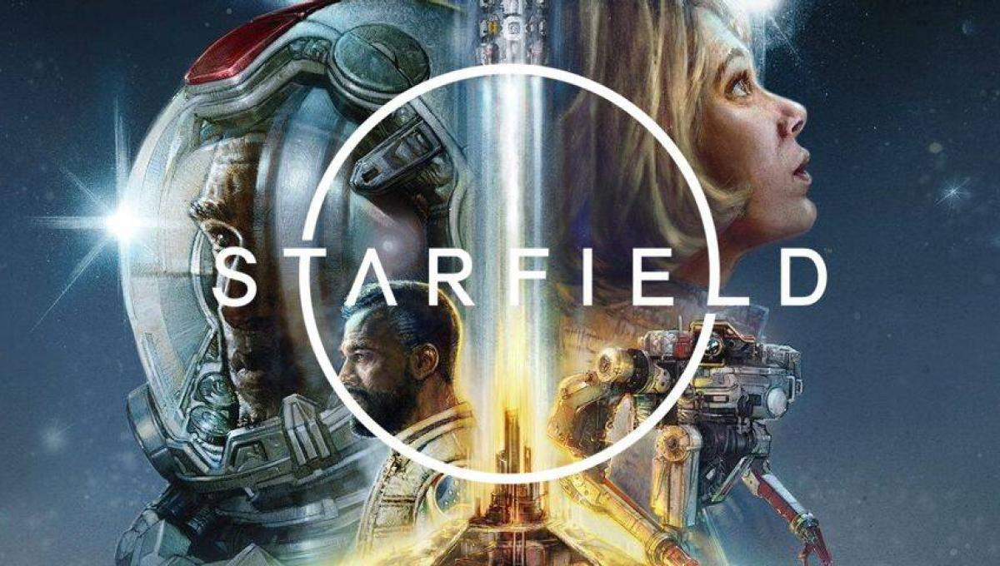
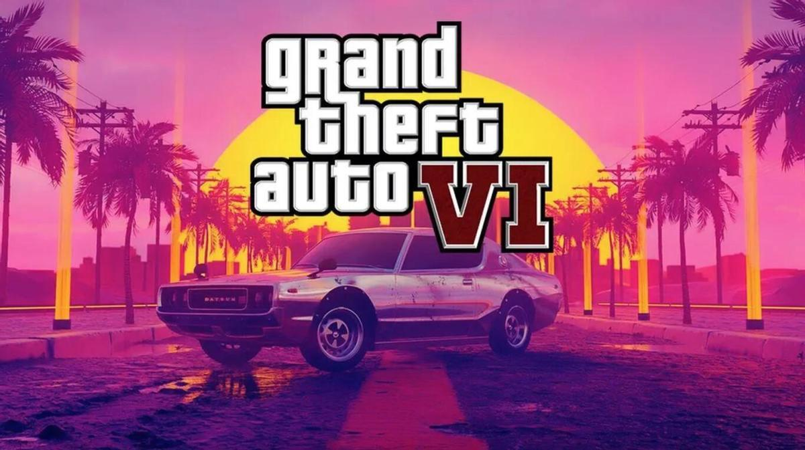
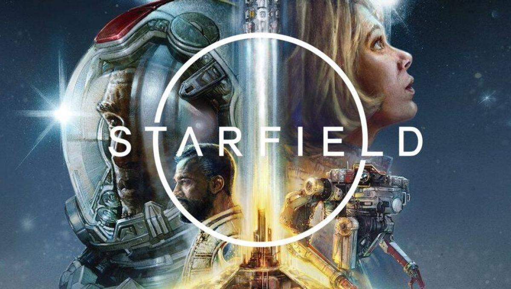
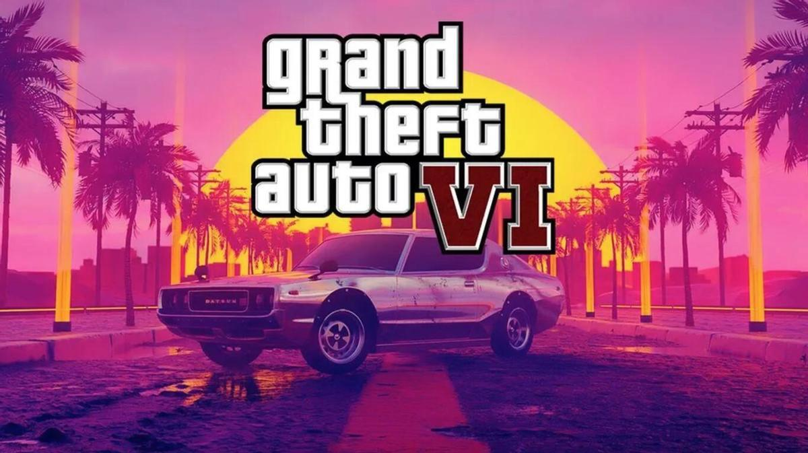
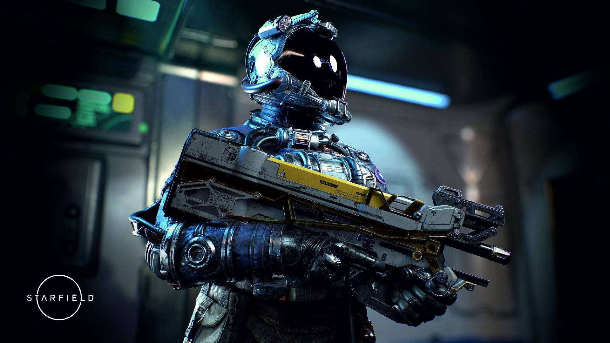
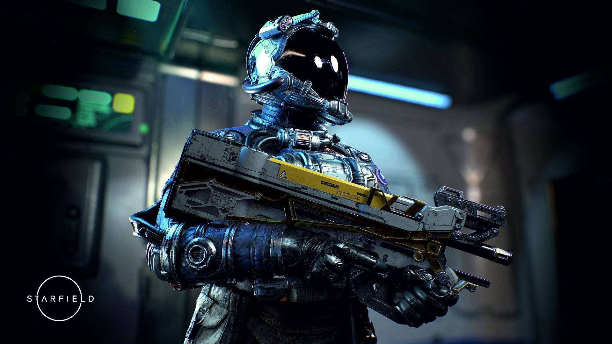

RESEÑAS
En está sección de la página os ofrecemos una selección de reseñas de varios de los videojuegos que más nos han gustado o que vendrán proximamente y esperamos con muchas ganas.
Para esto hemos elegido los siguientes videojuegos:
Suicide Squad: Kill the justice league, Silent Hill: The short message, Elden Ring, Starfield, y Grand Theft Auto VI.
 



Suicide Squad: Kill the justice league
Suicide Squad: Kill the Justice League no solo es un buen juego de disparos en tercera persona: es un shooter original en sus mecánicas, divertidísimo y frenético. Tampoco es solo un juego con una historia entretenida: sus personajes son memorables y la trama está repleta de momentazos. Pero también es un juego como servicio, un título que tiene la pretensión de que juguemos durante meses o años, o al menos, que volvamos a él de vez en cuando. ¿Ha conseguido Rocksteady, los creadores de Batman: Arkham, encajar estos elementos aparentemente contrapuestos? Es decir, ¿el título logra apelar tanto al público de las aventuras de acción narrativas como al de los looter shooters? Eso es lo que intentaremos dejar claro en el siguiente análisis.
Los creadores de la alabada trilogía del Caballero Oscuro ponen sobre la mesa una premisa potentísima. Metrópolis, la ciudad conocida por cualquiera que se haya acercado a los cómics, películas o series de DC Comics, ha sido sitiada por Brainiac. El gran villano ha transformado a los ciudadanos en monstruitos morados y descerebrados a su servicio, pero también ha corrompido a la Liga de la Justicia, a superhéroes de la talla de Superman, Batman, Linterna Verde y Flash. Todo intento por restablecer la normalidad ha fallado, pero el grupo militar ARGUS confía su última carta en nosotros, el Escuadrón Suicida.
Harley Quinn, Rey Tiburón, Deadshot y Capitán Boomerang se ven obligados a participar en la misión casi imposible de detener a Brainiac, y por supuesto, de matar a la Liga de la Justicia, mientras por el camino unen fuerzas con otros personajes, conocidos y nuevos, del Arkhamverso, cinco años después de los acontecimientos de Arkham Knight; aunque la trama se puede disfrutar sin haber jugado los Arkham, los fans disfrutarán al reencontrarse con personajes y recordar grandes momentos de aquellos títulos.

Silent Hill: The short message
Silent Hill: The Short Message nos recuerda inevitablemente a P.T.. Es un walking simulator en primera persona que nos lleva a un bloque de apartamentos abandonado en el que tenemos que dar varias «vueltas» hasta descubrir el final. Además, es gratuito y sirve para promocionar el retorno de la saga. Aquí no hay ninguna conexión explícita con otros juegos de la saga más allá de algún guiño que otro, pero sí que es posible que tengamos pistas sobre la historia de Silent Hill.
La historia principal, por su parte, cambia completamente de registro. Lo primero es que nos lleva hasta a Alemania, y nos cuenta la historia de Anita, una adolescente, y los problemas a los que se ha enfrentado a lo largo de su vida. La narrativa gira en torno a la depresión, el acoso escolar y el abuso infantil, y aunque creemos que en general se trata bien un tema tan complicado, también creemos que hay algún que otro patinazo. Algo similar pasa a la hora de crear esa «narrativa Silent Hill», por llamarlo de alguna manera, donde nada es particularmente explícito. Hay momentos fantásticos donde la simbología lo cuenta todo, mientras que otras veces pecan de darnos todo masticado para que entendamos lo que está pasando.
Obviamente, no queremos destripar nada, pero imaginamos que la idea de Konami ha sido sacar Silent Hill de la ambientación americana sin romper la conexión con su universo, a la vez que experimentaba con temas que se salen de lo habitual y, quizás, atraer a jugadores más jóvenes que puedan empatizar con su temática.
Elden Ring
A lo largo de nuestras vidas, siempre hay cosas que nos marcan. En el caso de los videojuegos, muchas veces no somos plenamente conscientes de ello, no al menos durante el primer contacto, pero sí que existe una sensación muy especial y difícil de describir, un "algo", que sin que lo sepamos, nos dice que estamos jugando a algo único que poco a poco se dispone a dejar una huella imborrable en nosotros.
A menudo, luchamos mentalmente contra ese sentimiento, "no puede ser tan bueno, seguro que solo el inicio es así" nos decimos, pero las horas pasan y lo que en un principio nos parecía un gran juego va calándonos, asentándose dentro de nosotros y dejando un poso que jamás se irá. Por supuesto, en este proceso también hay espacio para la sorpresa y la incredulidad al no ser capaces de asimilar cómo un grupo de personas ha conseguido crear algo que nos toca de tal manera, lo que suele traducirse en constantes y espontáneas expresiones de asombro durante la partida con cada nuevo giro, idea, mecánica o situación que se nos presenta. Para cuando nos queramos dar cuenta, ya estaremos tan inmersos dentro de la obra que nos costará no pensar en ella al apagar la consola o el ordenador durante las primeras semanas, y en el futuro, cuando hablemos de videojuegos con alguien, el nombre de ese título será una de las primeras cosas que aparecerán en nuestros pensamientos.
Al final, estas experiencias son las que nos terminan definiendo como jugadores e incluso como personas, las que dan sentido a este hobby que tantas alegrías nos da y que siempre está ahí para reconfortarnos de las asperezas con las que tenemos que lidiar en nuestro día a día en el mundo real. En ocasiones, jugamos solo por divertirnos y pasar un buen rato, pero en el fondo, siempre estamos esperando que llegue ese juego que vuelva a hacernos experimentar todo este torrente de sensaciones y que nos recuerde por qué los videojuegos son mucho más que un simple medio de entretenimiento. Elden Ring es "ese juego".


Starfield
IP de Bethesda Game Studios es un evento especial, significativo. No es habitual que los creadores de The Elder Scrolls y la corriente moderna de Fallout inicien un nuevo camino alejado de sus grandes marcas. Parece que ha pasado toda una vida desde la revelación de Starfield, cuando el E3 era el centro del videojuego durante unos días y el futuro se cimentaba a golpe de teaser. Por el camino se han publicado multitud de promesas, retrasado un par de veces en pos de su estabilidad y campañas de todo tipo que elevaban las expectativas. El ecosistema Xbox estaba (y está) necesitado de grandes golpes en la mesa en materia first party.
Lamentablemente, lo que nos hemos encontrado dista muchísimo de las expectativas que ha generado durante estos años. Es más: se encuentra lejísimos del listón de la compañía. Las sospechas comenzaban desde la primera hora de juego. La carta de presentación de los grandes sandbox de Bethesda siempre han firmado en este tramo lo que se denomina ‘momento wow’. El camino colina abajo hacia Cauce Boscoso en Skyrim y la sensación de estar sumergido en un mundo creíble. La salida de la alcantarilla de Oblivion, que en pleno 2006 te dejaba la mandíbula en el suelo. La huida del refugio 101 en Fallout 3 y la presentación de un yermo sin esperanza. En Starfield despertamos en una mina. A los cinco minutos ya picamos piedra como tutorial a los minerales y su recolección. Pasa media hora y ya tienes personalizado a tu personaje, eliminado al primer escuadrón pirata y el cuadro de mandos de tu nave en las manos, dispuesto para hacer el despegue rumbo a lo desconocido. Pasan dos, cinco, diez horas y ese momento nunca llega. Tampoco lo hará en las horas venideras. Porque la experiencia Starfield parte de serios problemas conceptuales que rompen de lleno con las motivaciones que el estudio pretendía trasladar a la experiencia.

 

Grand Theft Auto VI
'GTA VI' está en su fase final de desarrollo. Y aunque Rockstar no ha dado más detalles sobre fechas muy concretas, estado del proyecto y demás cuestiones, el hype está en el aire. Cada vez que se filtra algún dato o posible cuestión técnica sobre el futuro juego, internet arde, los trending topics se disparan y los jugadores se preguntan si esta nueva entrega supondrá una revolución de la industria como lo supusieron todas los demás
Algo sabíamos antes del anuncio: Rockstar afirmaba que estaba desarrollando el juego desde antes de abril de 2020. Si tenemos que establecer alguna comparación, 'GTA V' comenzó a desarrollarse en 2008 y salió a la venta en 2013, lo que daba a 'GTA VI' una fecha tentativa de 2025. Rockstar pareció pseudoconfirmarlo al hablar de lanzamientos que marcarán "nuevos estándares en nuestra industria" para el año fiscal 2025, es decir, a partir de ya entrado 2024.
Las contradicciones parten desde los sistemas de juego. Se nos insiste constantemente en la idea de ser una mota de polvo en un universo colmado de 1000 planetas plenamente explorables. Sabemos de sobra que solo una parte de ellos hacen algo más que generar contenidos a partir del motor del juego, pero ¿de qué sirve llenar titulares con cifras enormes cuando en la práctica no se incita a ser visitados? Los planetas dividen su contenido en dos partes. La primera, la del contenido concreto y medianamente relevante, aparece con un icono especial. La segunda, la que más conversaciones puede producir, es la posibilidad de pinchar en cualquier lado de su superficie y aterrizar en ella.
Otro detalle proporcionado por Rockstar que hacía pensar que no habría que esperar cinco años de desarrollo es que la compañía ya ha anunciado que el juego tendrá un tamaño "más contenido" y que irá creciendo con el tiempo, lo que hace pensar en un desarrollo no tan complejo como el de anteriores entregas.